|
Zhe Li (李哲) I'm a researcher at Huawei, where I lead a group working on 2D/3D/4D reconstruction, animation and generation using AIGC and graphics techniques. I joined Huawei through the TopMinds Program (华为"天才少年"计划) in 2024. I obtained my Ph.D. from Tsinghua University, advised by Prof. Yebin Liu. My research focuses on 3D vision & graphics, especially for humans, animals, scenes, etc. |
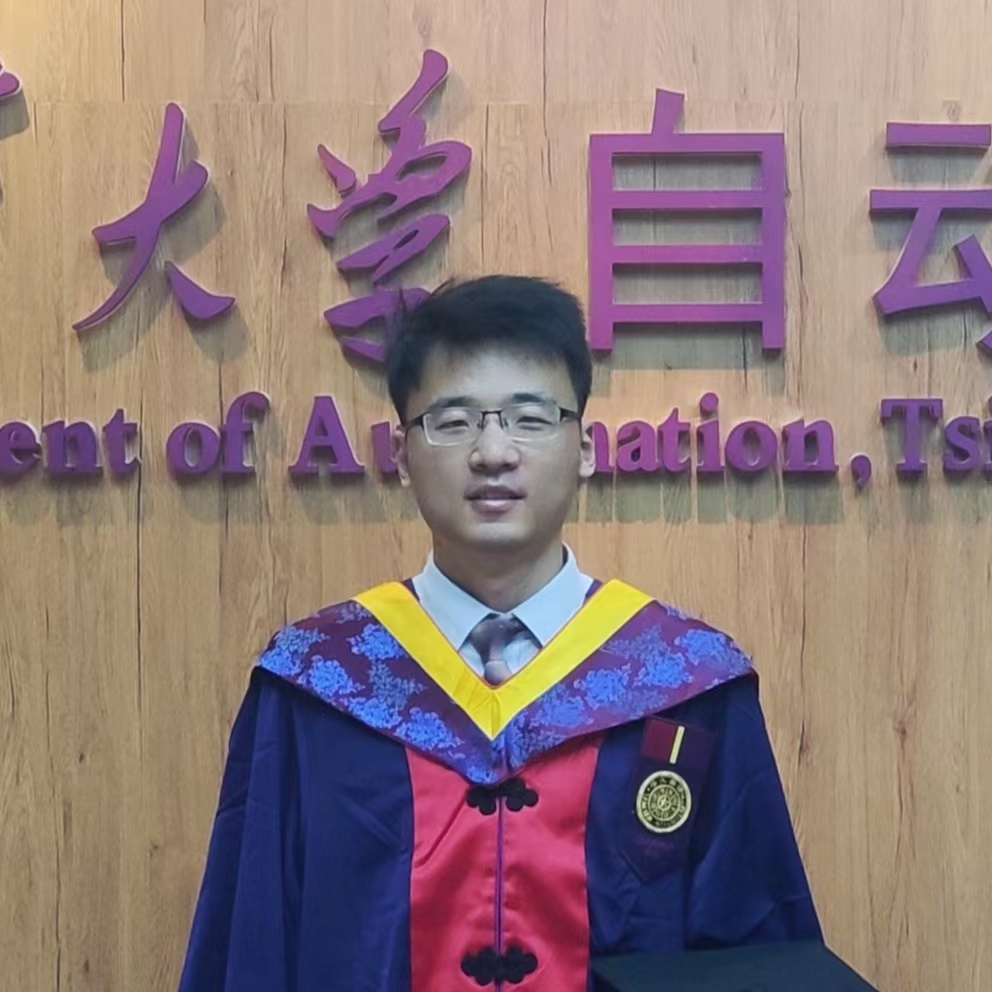 |
Recruitment
华为2012实验室 全职员工/实习生/博后 招聘： |
Research |
|
DeX-Portrait: Disentangled and Expressive Portrait Animation via Explicit and Latent Motion Representations
Yuxiang Shi*, Zhe Li*, Yanwen Wang, Hao Zhu, Xun Cao, Ligang Liu (*=equal contribution) CVPR, 2026 (Highlight) project page / arXiv / video |
|
|
HumanRAM: Feed-forward Human Reconstruction and Animation Model using Transformers
Zhiyuan Yu*, Zhe Li*, Hujun Bao, Can Yang, Xiaowei Zhou (*=equal contribution) SIGGRAPH, 2025 project page / arXiv / video |
|
|
Animatable and Relightable Gaussians for High-fidelity Human Avatar Modeling
Zhe Li*, Yipengjing Sun*, Zerong Zheng, Lizhen Wang, Shengping Zhang, Yebin Liu (*=equal contribution) arXiv, 2024 project page / arXiv / video |
|
|
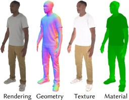 |
MeshAvatar: Learning High-quality Triangular Human Avatars from Multi-view Videos
Yushuo Chen, Zerong Zheng, Zhe Li, Chao Xu, Yebin Liu ECCV, 2024 project page / arXiv / video / code |
|
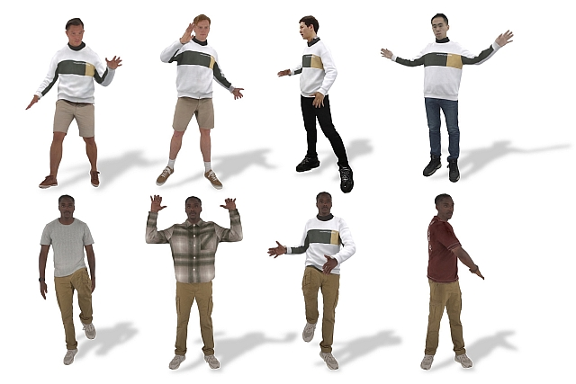 |
LayGA: Layered Gaussian Avatars for Animatable Clothing Transfer
Siyou Lin, Zhe Li, Zhaoqi Su, Zerong Zheng, Hongwen Zhang, Yebin Liu SIGGRAPH, 2024 project page / arXiv / video |
|
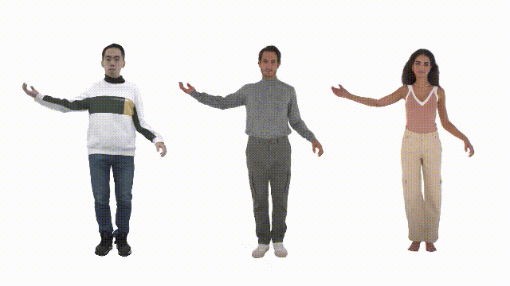 |
Animatable Gaussians: Learning Pose-dependent Gaussian Maps for High-fidelity Human Avatar Modeling
Zhe Li, Zerong Zheng, Lizhen Wang, Yebin Liu CVPR, 2024 project page / arXiv / video / code |
|
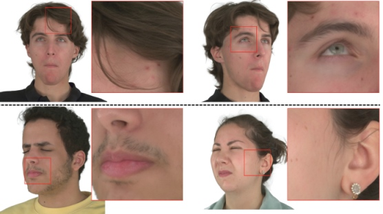 |
Gaussian Head Avatar: Ultra High-fidelity Head Avatar via Dynamic Gaussians
Yuelang Xu, Benwang Chen, Zhe Li, Hongwen Zhang, Lizhen Wang, Zerong Zheng, Yebin Liu CVPR, 2024 project page / arXiv / video / code |
|
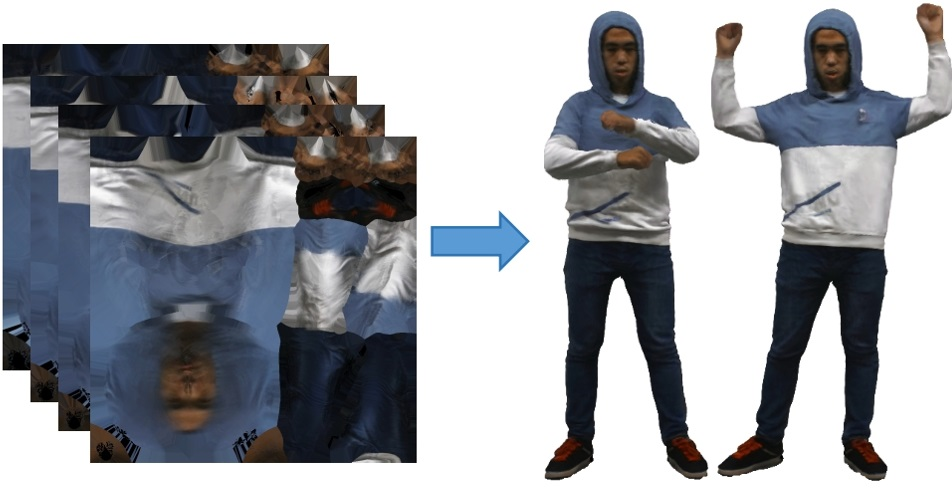 |
TexVocab: Texture Vocabulary-conditioned Human Avatars
Yuxiao Liu, Zhe Li, Yebin Liu, Haoqian Wang CVPR, 2024 project page / arXiv |
|
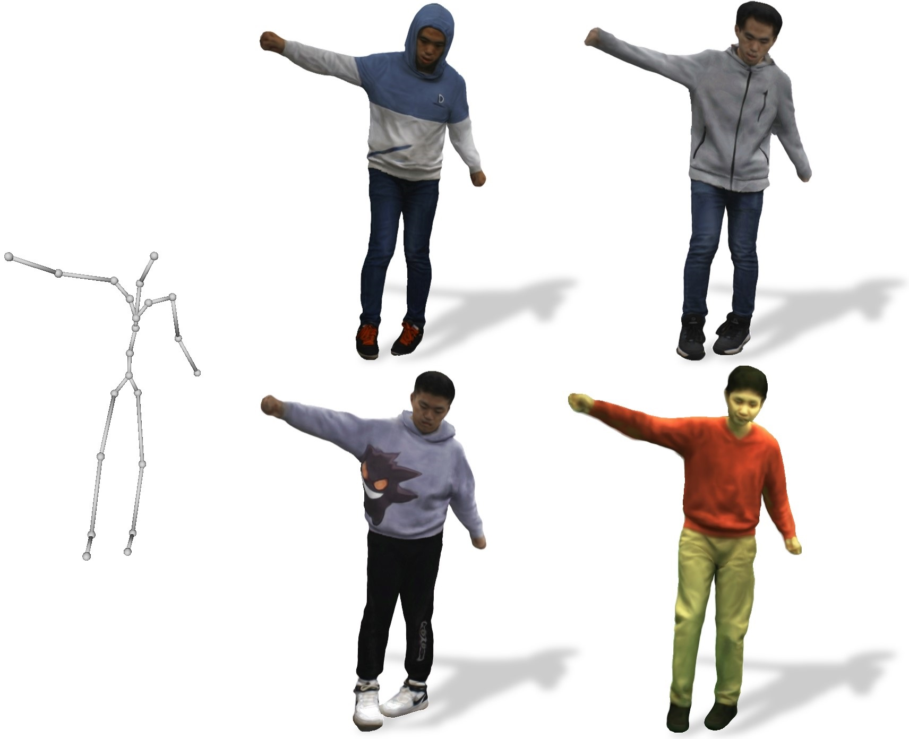 |
PoseVocab: Learning Joint-structured Pose Embeddings for Human Avatar Modeling
Zhe Li, Zerong Zheng, Yuxiao Liu, Boyao Zhou, Yebin Liu SIGGRAPH, 2023 project page / arXiv / video / code |
|
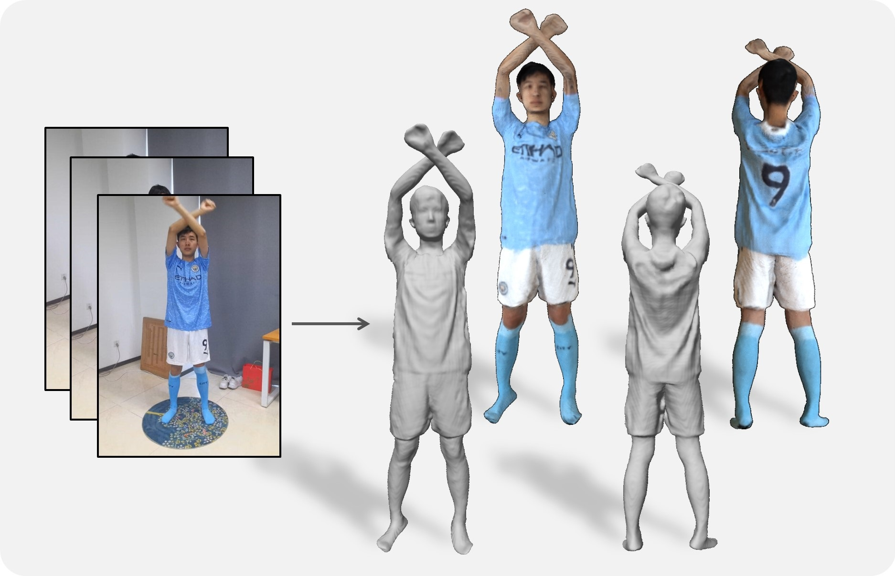 |
AvatarCap: Animatable Avatar Conditioned Monocular Human Volumetric Capture
Zhe Li, Zerong Zheng, Hongwen Zhang, Chaonan Ji, Yebin Liu ECCV, 2022 project page / arXiv / video / code |
|
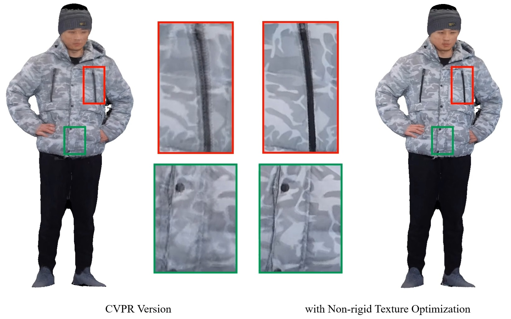 |
Robust and Accurate 3D Self-portraits in Seconds
Zhe Li, Tao Yu, Zerong Zheng, Yebin Liu TPAMI, 2021 project page / IEEE |
|
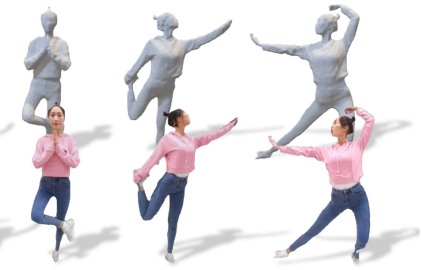 |
POSEFusion: Pose-guided Selective Fusion for Single-view Human Volumetric Capture
Zhe Li, Tao Yu, Zerong Zheng, Kaiwen Guo, Yebin Liu CVPR, 2021 (Oral) project page / arXiv / video / talk |
|
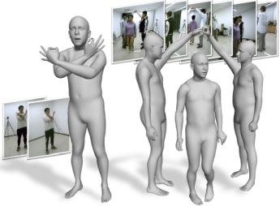 |
Lightweight Multi-person Total Motion Capture Using Sparse Multi-view Cameras
Yuxiang Zhang, Zhe Li, Liang An, Mengcheng Li, Tao Yu, Yebin Liu ICCV, 2021 project page / arXiv / video |
|
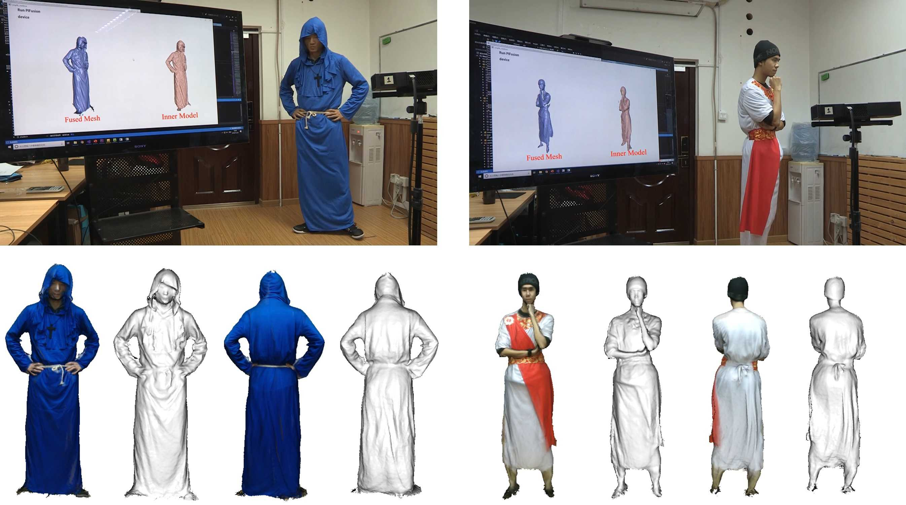 |
Robust 3D Self-portraits in Seconds
Zhe Li, Tao Yu, Chuanyu Pan, Zerong Zheng, Yebin Liu CVPR, 2020 (Oral) project page / PDF / video / talk |
Bio |
Education
Awards
ServicesReviewer: CVPR / ICCV / ECCV / SIGGRAPH Asia / 3DV / T-PAMI Contact
Email: lizhe_thu[AT]126.com |

{kind=link}
|
Template by Jon Barron |